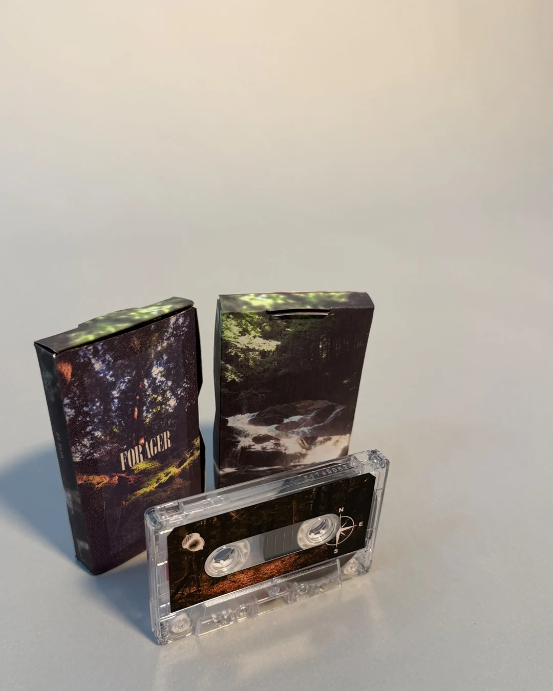
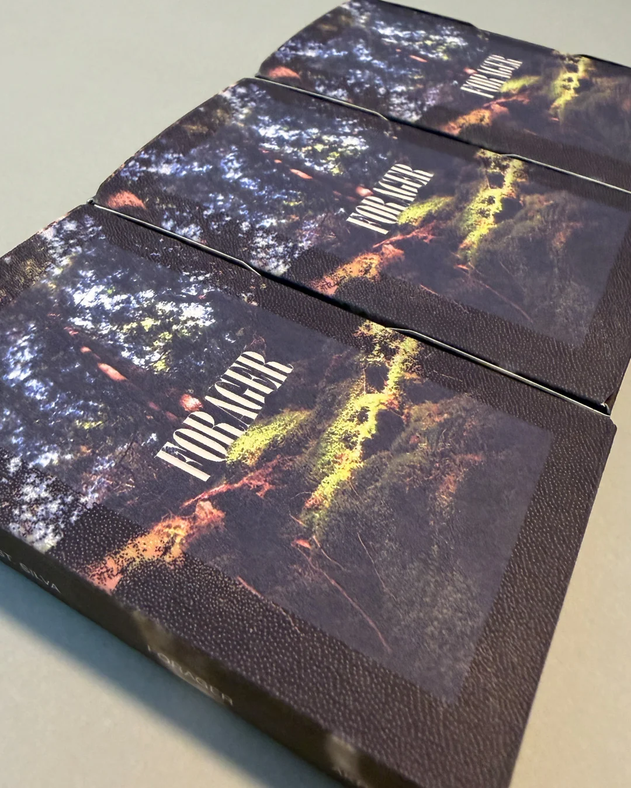

Forager is an album released by St. Silva, a musical moniker of Ben Dexter Cooley. Using a combination of field recordings, tape loops, and modular synthesis, the "music that exists somewhere between the organic and the synthetic".
PUBLISHED BY
AKP Recordings on limited cassette tape
ROLE
field recording, composition, modular synthesis, tape loops
ABOUT
Announcing Forager from St. Silva, a warm collection of looping mediations that blur the line between electronic and the natural, merging formless exploration with found sounds in an unlikely collaboration of time and space.
Crafted during a year-long process of documenting, sorting, and re-collaging sonic material, Forager is a composite of material recorded months prior to their recontextualization. “Time creates distance, sometimes a healthy distance, between the art and the artist,” shares St. Silva. “This is a document, a marker of where I was during a moment of time and the sounds that inspired me.”
To forage is to search for, gather, or collect food or resources from the natural environment. “Sometimes playing music feels like that, more an act of discovering something than creating something.” By employing time to relinquish the source material from its time and place, St. Silva finds new context for the collected moments, and in the process discovers a whole new environment. Using a combination of tape loops, modular synthesis, field recording, and melodic synth lines, St. Silva offers a sun-drenched nostalgia where faded memories waft over analog-saturated synthetic forests.
“primarily bucolic and peaceful, with a pervading sense of sun-drenched nostalgia”
“evokes the ancestral mode of gathering from naturally available sources, holding a tidy mirror to the artist’s creative practice and the emotional landscape of the work itself” Stonewashed
"...more interested in discovery than declaration, and ‘Forager’ transforms that philosophy into an absorbing meditation on memory, landscape, and the passage of time. Rather than presenting ambient music as a passive backdrop, this twelve-piece collection explores listening itself as an act of attention. Built from tape loops, modular synthesis, field recordings, and gently luminous melodic figures, the album invites the natural world to become an active collaborator. The result is neither purely electronic nor conventionally acoustic, but something suspended between recollection and immediate experience, where every sound carries the residue of another place and another season."

